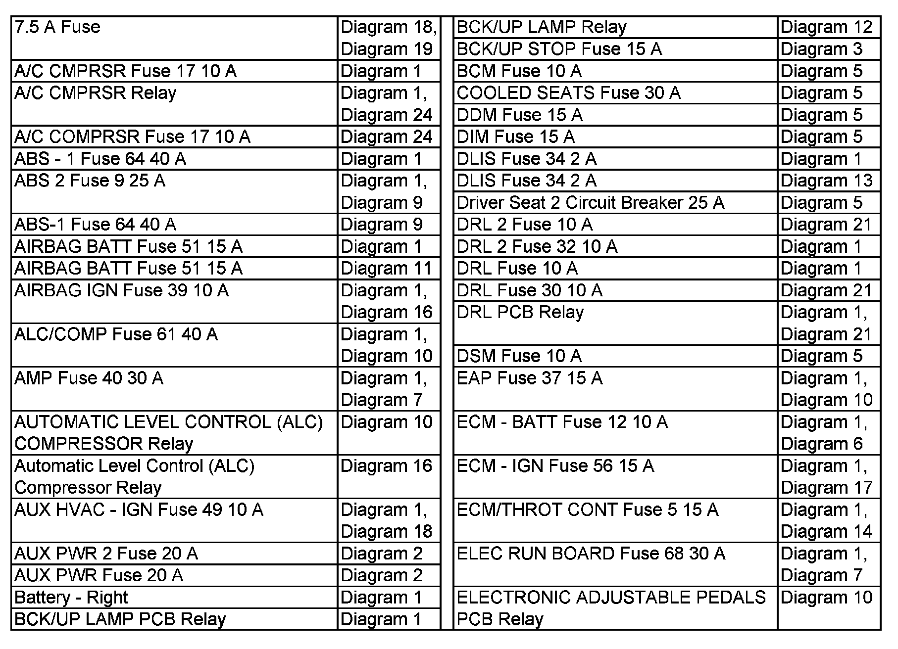
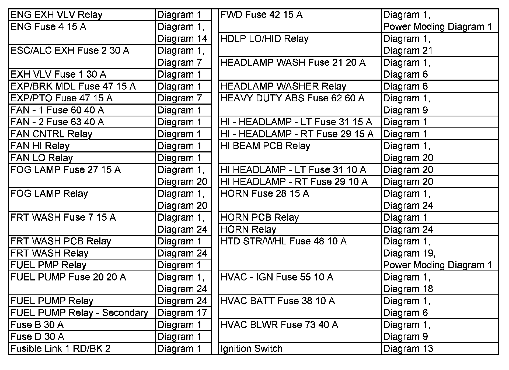
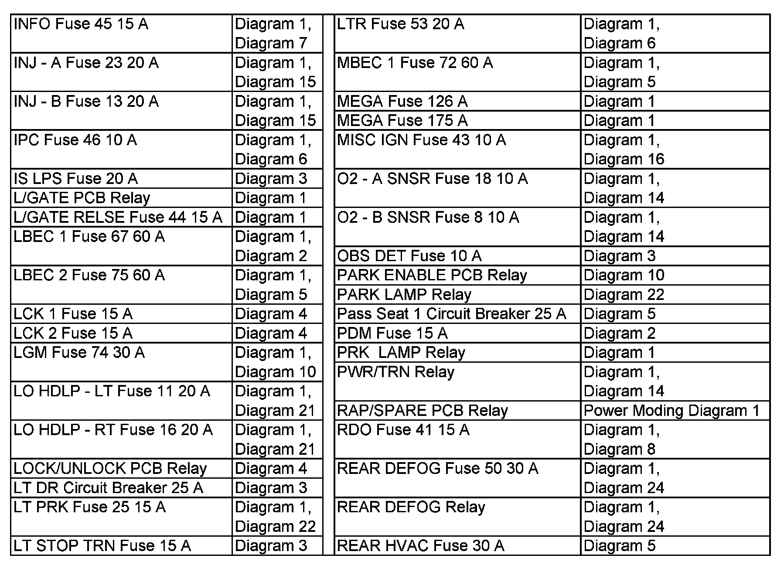
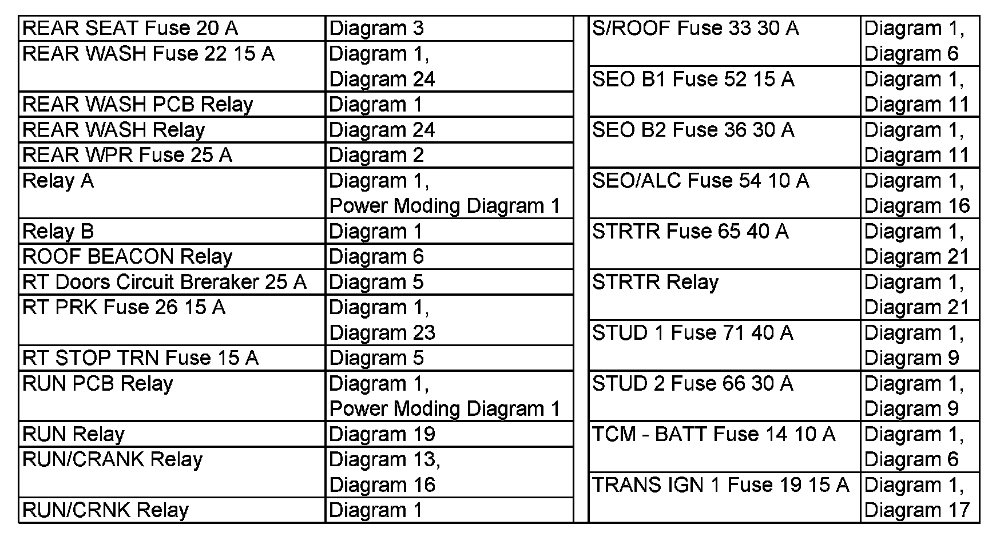
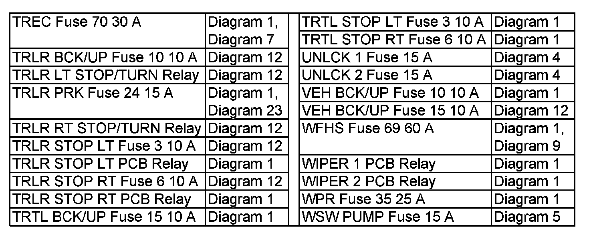

Operation CHARM
: Car repair manuals for everyone.
Home
>>
Cadillac
>>
2007
>>
Escalade ESV AWD V8-6.2L
>>
Repair and Diagnosis
>>
Starting and Charging
>>
Power and Ground Distribution
>>
Diagrams
>>
Electrical Diagrams
>>
Power Distribution Diagrams
>>
Power Distribution Diagram Index
Power Distribution Diagram Index
7.5 A - ELECTRONIC ADJUSTABLE PEDALS PCB:

ENG EXH VLV - Ignition:

INFO - REAR HVAC:

REAR SEAT - TRANS IGN 1:

TREC - WSW PUMP:
